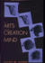
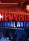

Events Events |
What's new

The Arts and the Creation of Mind
Elliot Eisner, professor of art at Stanford University, argues "Although the arts are often thought to be closer to the rim of education than to its core, they are, surprisingly, critically important means for developing complex and subtle aspects of the mind."
In this, his fourth book, he describes how various forms of thinking are evoked, developed, and refined through the arts. "These forms of thinking" says Eisner, "are more helpful in dealing with the ambiguities and uncertainties of daily life than are the formally structured curricula that are employed today in schools."
Reference: Eisner, E. (2002). The arts and the creation of mind. New Haven and London: Yale University Press.
Back to top
|
the artwork revealed – an education CD-ROM
the artwork revealed, produced by the Robert McDougall Art Gallery in Christchurch, is an interactive CD-ROM based on The Arts in the New Zealand Curriculum. It enables students and teachers to go behind the scenes and explore the creative techniques of some of the country's leading artists. Using images, moving pictures, voice-overs, and background information, the artwork revealed combines the artists' ideas with the art process. In this way, students can develop a greater understanding of how works of art are created.
Learners on all levels can choose their own pathway through this resource. This interaction supports the "Understanding the Arts in Context" (UC) strand of the curriculum statement. This CD-ROM is PC and Mac compatible, and designed to operate with the computer capabilities of most schools. For further information contact judith.hoult@ccc.govt.nz
Back to top
The Whale Rider Resource
http://whaleriderthemovie.com/
A Whale Rider teacher resource has been created to support teachers studying the film with their upper primary/intermediate classes. The resource deals with the film itself rather than the novel. The focus is on the visual language within the film, in particular some of the powerful scenes and film motifs. It also includes a running schedule for the film, serving as a memory aid for teachers.
Back to top
Versions of our national anthem for use in New Zealand schools

The 14 tracks on this CD offer seven versions of the national anthem for primary schools, and seven for secondary schools. They are recorded in keys suited to the different voices of primary and secondary students. As well as full-mix tracks, there are instrumental and other mixes for use in backing school rehearsals and performances.
Both sets include an appropriate karanga followed by the first verse in Māori, a short haka, and the verse in English.
The CD is a celebration of New Zealand's heritage. It has a bicultural, contemporary style, featuring young artists and musicians from top New Zealand bands and television shows. There are also lead sheets for the singers, and simple guitar chords to enable students to play along.
Published by Learning Media Ltd, Box 3293, Wellington, for the Ministry of Education.
Item number 10070
Back to top
Wall charts for classroom dance, years 1–10
The Ministry of Education has developed two sets of charts to support the teaching of dance as described in The Arts in New Zealand Curriculum. These charts are aimed at levels 1–3 and levels 4–5 of the curriculum document. Each set has four separate charts. Each chart represents one of the four strands of the dance curriculum – Developing Practical Knowledge, Developing Ideas in Dance, Communicating and Interpreting in Dance, Understanding Dance in Context.
These large, attractive and inspirational charts have unlimited potential for challenging, motivating and helping students learn in dance. They describe and communicate different aspects of the dance curriculum strands, illustrate and define key terminology (including selected Māori and English vocabulary), identify and illustrate selected choreographic devices and structures, and provide dance images from a variety of contexts that highlight the diversity and richness of dance in Aotearoa/New Zealand.
Published 2002 by CWA New Media for the Ministry of Education. They can be ordered free from Learning Media Ltd http://www.learningmedia.co.nz
0800 800 565 phone, 0800 800 570 fax
P O Box 3293, Wellington
Years 1–6, item number 10590
Years 7–10, item number 10591
Back to top
|